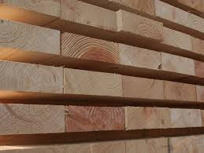

Softwoods
- Araucaria
- Hoop pine (Araucaria cunninghamii)
- Monkey puzzle tree (Araucaria araucana)
- Balsam fir (Abies balsamea)
- Larch (Larix)
- White pine
- White cedar
- Nootka cypress (Cupressus nootkatensis)
Softwood is sometimes used as a substitute for hardwood, primarily because it's gerally cheaper. But there are other reasons, including the fact that it's usually lighter and easier to cut and shape as it yields more readily to cutting tools and machines.
Hardwoods

- ASH
- BIRCH
- CHERRY
- CYPRESS
- HACKBERRY
- SYCAMORE
- WALNUT
As with any trade, hardwood flooring professionals need an assortment of tools to install a floor properly, safely, and in a timely manner. The choice of which tools to have on hand, however, can be daunting.